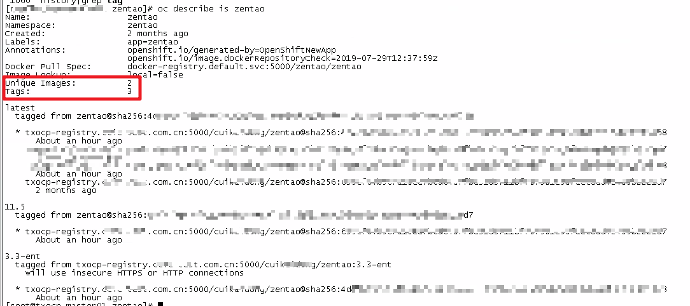
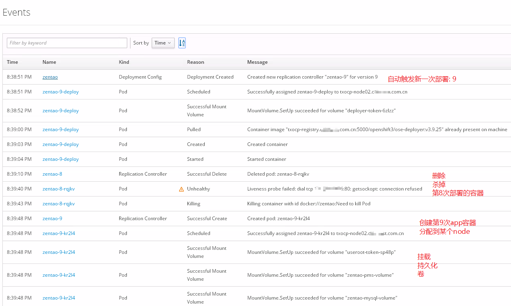
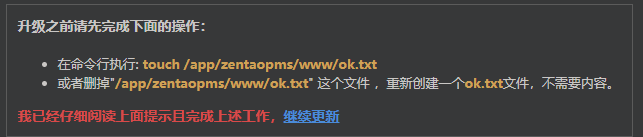
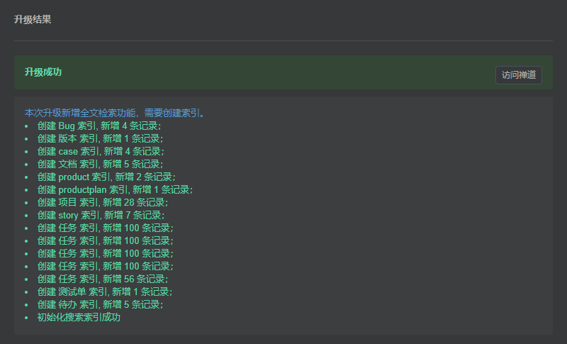
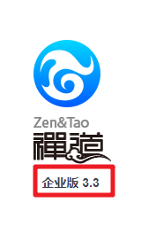

OpenShift上禅道升级方案
在 2019-07-29 Monday 发布于 DevOps 分类 • 2 min read
概述¶
在之前的文章中, 介绍了把禅道部署到企业测试环境的过程. 而这次是要对禅道进行一下升级, 其实严格说来不仅仅升级, 而是把: 开源版禅道11.5 升级为 企业版禅道3.3. 本文记录了升级的全过程.
其实所有的升级中包含的最重要的是以下几步:
- 备份
- 升级
- 验证
备份¶
备注:
其实可以一键自动化备份的. 位于禅道网页的: 后台 -> 数据 -> 开始备份
配置文件、代码和附件的备份¶
- 配置文件存放在zentao/config/my.php
- 附件存放在zentao/www/data/目录下面。
- 修改的代码也都放在zentao目录下面。
因此备份配置文件、代码和附件的方法就是将整个zentao目录备份即可。
对于本次OpenShift, 操作如下:
# 查看禅道pod运行的节点
oc project zentao # 切换到zentao项目
oc get pod # 查看zentao pod的name
oc describe pod <pod_name> # 查看zentao 对应pod的详细信息
# 输出如下:
# Node: xxxxx-node02.xxxxx.com.cn/10.X.X.X
# Mounts:
# /app/zentaopms from zentao-volume-1 (rw)
# /var/lib/mysql from zentao-volume-2 (rw)
# Volumes:
# zentao-volume-1:
# ClaimName: zentao-pms
# zentao-volume-2:
# ClaimName: zentao-mysql-pvc
oc get pvc
# 可以看到绑定的PV是: zentao-pms-volume 和zentao-mysql-volume
oc describe pv zentao-pms-volume zentao-mysql-volume
# 可以看到对应的共享存储:
# Server: 10.X.X.X
# Path: /vol/Thxxxxxx/zentao-pms
# Path: /vol/Thxxxxxx/zentao-mysql
# 在node2上执行:
df -h | grep zentao
# 输出如下:
# 10.X.X.X://vol/Thxxxxxx/zentao-pms 50G 3.0G 48G 6% /var/lib/origin/openshift.local.volumes/pods/6340...-...-97cd/volumes/kubernetes.io~nfs/zentao-pms-volume
# 10.X.X.X://vol/Thxxxxxx/zentao-mysql 50G 3.0G 48G 6% /var/lib/origin/openshift.local.volumes/pods/6340...-...-97cd/volumes/kubernetes.io~nfs/zentao-mysql-volume
# 备份
cd /var/lib/origin/openshift.local.volumes/pods/6340...-...-97cd/volumes/kubernetes.io~nfs/zentao-pms-volume
tar -cvzf /root/zentao-pms-volume.tgz ./zentao-pms-volume/
数据库的备份¶
可以使用mysql提供的管理工具，将数据库导出： mysqldump -u xxx -p zentao > zentao.sql，其中的user换成实际的用户。
升级¶
更新Dockerfile和镜像¶
Dockerfile更新如下:
FROM ubuntu:16.04
MAINTAINER yidong <yidong@cnezsoft.com>
RUN apt-get update && apt-get install -y apache2 mariadb-server php php-curl php-gd php-ldap php-mbstring php-mcrypt php-mysql php-xml php-zip php-cli php-json curl unzip libapache2-mod-php locales
ENV LANG="en_US.UTF8"
ENV MYSQL_ROOT_PASSWORD="123456"
RUN echo -e "LANG=\"en_US.UTF-8\"\nLANGUAGE=\"en_US:en\"" > /etc/default/locale && locale-gen en_US.UTF-8
RUN mkdir -p /app/zentaopms
COPY docker-entrypoint.sh /app
#RUN random=`date +%s`; curl http://cdn.zentaopm.com/latest/zentao.zip?rand=$random -o /var/www/zentao.zip
#RUN cd /var/www/ && unzip -q zentao.zip && rm zentao.zip
COPY ./zentaopms/ /var/www/zentaopms/
RUN a2enmod rewrite
RUN rm -rf /etc/apache2/sites-enabled/000-default.conf /var/lib/mysql/*
RUN sed -i '1i ServerName 127.0.0.1' /etc/apache2/apache2.conf
COPY config/apache.conf /etc/apache2/sites-enabled/000-default.conf
COPY config/ioncube_loader_lin_7.0.so /usr/lib/php/20151012/ioncube_loader_lin_7.0.so
COPY config/00-ioncube.ini /etc/php/7.0/apache2/conf.d/
COPY config/00-ioncube.ini /etc/php/7.0/cli/conf.d/
VOLUME /app/zentaopms /var/lib/mysql
ENTRYPOINT ["/app/docker-entrypoint.sh"]
企业版3.3的包和对应的试用license, 禅道的技术支持已经提供给我了.
我解压后统一放到了
./zentaopms/下
使用Dockerfile 构建docker镜像并测试:
cd docker_zentao
docker build -t zentao:3.3-ent .
# 测试
docker run --name zentao-ent-test -p 8000:80 -e MYSQL_ROOT_PASSWORD=123456 -d zentao:3.3-ent # 后台运行该docker容器
docker ps # 查看容器是否正常运行, 有无crash
docker stop zentao-ent-test # 测试完毕, 停止该容器
将镜像导出为tar包:
docker save -o docker_zentao.tar zentao
上传并导入新的docker镜像¶
先ftp传上去. 然后执行如下命令:
docker load -i docker_ent_zentao.tar
docker push txocp-registry.example.com/ewhisper/zentao:3.3-ent
无法连接外网, 且内网没有足够多的常用基础镜像好难受啊!

新部署¶
注意:
因为该禅道docker镜像包括数据库组件: mysql. 为有状态. 无法平滑升级或启动多个.
所以升级前一定要注意升级策略要是:
Recreate而不能是其他.
Strategy: Recreate
本次升级使用到了OpenShift的ImageStream功能. 该功能是多个镜像的链式组合. ImageStream只是个元数据, 不包含镜像.
升级前, 我们已经确认, 禅道该APP的触发自动部署的策略为: ImageStream为zentao的最新版本, 镜像发生了变化就自动触发部署. 如下:
Triggers: Image(zentao@latest, auto=true), Config
我们通过如下设置更新ImageStream:
其实最简单就是将上边的镜像直接push为最新, 即:
docker push txocp-registry.example.com/ewhisper/zentao:latest, 一检测到镜像发生变化就会自动部署. 但是考虑到禅道的2个镜像: 开源版11.5和 企业版3.3 不是这么简单的关系. 所以为了考虑回滚方便, 并没有用这种方式.
oc tag zentao:latest zentao:11.5 # 将之前的开源11.5镜像标记为: 11.5(之前由于只有这一个镜像, 就直接用了latest标签)
oc tag txocp-registry.example.com/ewhisper/zentao:3.3-ent zentao:3.3-ent --insecure=true # 将商业版3.3镜像标记为ImageStream中的一个新标签: zentao:3.3-ent. `--insecure=true` 是因为测试镜像库没有用https
oc tag zentao:3.3-ent zentao:latest # 将商业版3.3镜像标记为最新
这时ImageStream的信息如下:

此时, 由于latest镜像发生变化, 会自动触发新一次的部署, 相关的Events如下:

执行升级程序¶
接下来就是禅道 升级企业版的步骤了, 具体参见禅道官方文档 - 开源版升级到企业版
- 访问升级URL: 我本地访问禅道的地址是 http://127.0.0.1:81/zentao，那么浏览器输入 http://127.0.0.1:81/zentao/upgrade.php，即可进入升级步骤。
- 请根据提示创建ok.txt 文件。创建完成后，请点击 继续更新。

- 一步一步按照提升进行, 最后会提示要创建索引, 如下图:

- 至此升级完成, 登录进行功能和数据完整性验证. (这一步很重要, 但是我就不详细说明了. )


升级成功后千万不要直接进入首页并按照首页提示操作, 本人血的教训!!! 谨记!!! 如下:

回顾和总结¶
其实回顾一下过程, 虽然很复杂, 但这种复杂是企业环境的网络复杂导致的, 是可以后续进一步优化的. 包括:
- 备份: 创建并使用一键自动化备份脚本. (其实禅道本身有的, 位于: 后台 -> 数据 -> 开始备份)
- 代码升级并编译为镜像: 其实升级那一章节可以大幅度缩减的, 理想情况是:
- 代码放在git上, git上代码更新到需要部署的版本; (开发的精力完全专注于创造性工作)
- 配置OpenShift的webhook, 触发自动构建新镜像并push到镜像库;
- 镜像库检测到镜像发生变化, 触发自动部署
- 升级完成.
- 要做到上边说的这么美好, 还有以下地方要改进:
- 测试环境连接外网, 或测试环境有一个可以定期同步常用镜像的镜像库.
- 开发的电脑要安装docker和OpenShift CLI 工具
oc, 并且可以直接访问 测试镜像库和测试OpenShift.
如果可以做到, 那么理想中的情况就是:
- 开发只管创造性的工作(写代码), 其他全部通过预置条件自动触发, 完全不需要人工干预.
- 运维只负责第一次上线的相关脚本编写, 资源分配, 以及容器平台, 监控告警平台等的开发.
 想想都醉了
想想都醉了